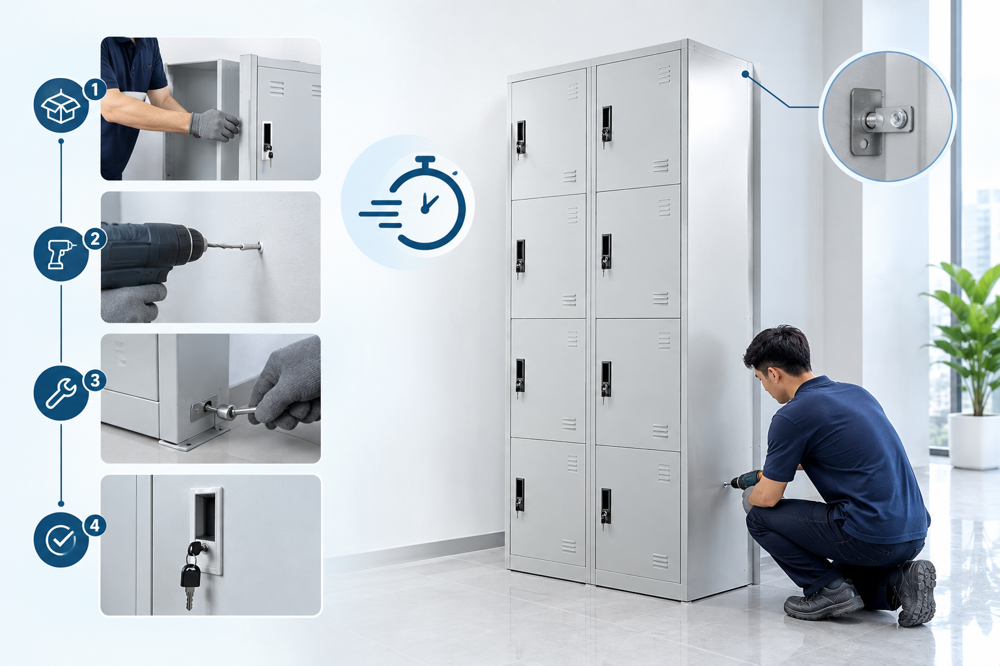

Perkantoran & BUMN 📠Jakarta Pusat
🢠120 Unit • Pengadaan Sentral
Instalasi Locker Arsip Sentral BUMN Jakarta
Pengadaan dan perakitan 120 unit locker arsip besi Zeco dengan sistem kunci ganda untuk manajemen arsip berkas terpusat yang rapi dan aman.
Zeco 6 Pintu
Dual Master Key
Powder Coating